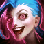
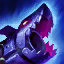
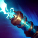
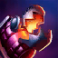
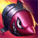

Passive
Get Excited!
Help take down a champion, epic monster, or enemy structure and Jinx gets a burst of movement and attack speed.
One minigun, one rocket launcher, and a very good reason to watch your step.

Help take down a champion, epic monster, or enemy structure and Jinx gets a burst of movement and attack speed.

Pow-Pow fires faster with repeated attacks. Switch to Fishbones to trade that speed and some mana for longer reach and explosive splash damage.

Aim the shock pistol down a line. The first enemy struck takes damage, slows down, and is briefly revealed.

Toss a row of bite-sized traps. Once armed, they root enemy champions who step on them. Untriggered traps explode after a short delay.

Launch a rocket across the map. It gains power in flight and bursts on the first enemy champion it hits. Enemies caught in the blast take more damage the more health they are missing.
Shared Jinx builds weapons with unmistakable personalities. Fishbones has a shark’s grin in both portrayals.
Arcane Building the rocket launcher takes time, materials, and a power source. Its first launch is a turning point in her story.
League Fishbones is a decision you make repeatedly. Use its splash damage against a cluster, then swap to Pow-Pow for sustained fire.
Shared Jinx turns small mechanical toys into weapons that catch people off guard.
Arcane Powder wants her inventions to prove she can help Vi. Whether a device works can change what happens to her family.
League Flame Chompers have a predictable job. Lay them across an escape route to pin a pursuer in place.
Shared Zaun is her home. Blue braids, graffiti, and homemade gear give her a visual language that carries across both worlds.
Arcane The series spends time with Powder before she becomes Jinx. Her changing bond with Vi gives her choices their emotional weight.
League A match starts with Jinx already the Loose Cannon. You experience her volatility through sudden bursts of speed after a takedown.